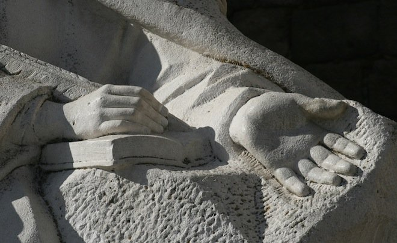

El timbre del portero automático sonó a la hora esperada. “Sí, ahora mismo bajo. Un minuto, por favor.” Augusto tomó las llaves y se echó un último vistazo en el espejo del recibidor. Se ajustó el nudo de la corbata y comprobó que la cartera contuviese el libro y las hojas sueltas. Poco después, bajó al portal y subió al taxi que le estaba esperando. “Buenos días, disculpe el retraso”. “No se preocupe, vamos con tiempo y hoy sábado el tráfico está bien a estas horas. A la calle Romeu de Armas, ¿verdad?” “Eso es”.Aquella mañana de mayo era fría, pero soleada. Los castaños del paseo mostraban huellas de una primavera como las de antes, con lluvias, días nublados y tardes largas y tibias. Augusto se dijo que los meses próximos vendrían bien para sus huesos doloridos. «¡Cómo vuela el tiempo!», pensó. No parecía que hiciese tanto desde que comenzara sus estudios en la Universidad, pero el caso es que había consumido toda una vida y cada día era un regalo. A sus 78 años poco podía esperar, pero tampoco pedía demasiado: seguir trabajando algunos ratos en su libro, leer un par de horas hasta que sus ojos se fatigaran, escuchar música y pasear las tardes de sol.
Hacía tiempo que ya no daba conferencias y había reducido los agasajos y homenajes a lo indispensable. Desde los últimos premios en Berlín y Aquisgrán, en reconocimiento a su larga carrera, entregados con la solemnidad reservada a quienes se considera inminentes cadáveres, no concedía entrevistas telefónicas ni se prestaba a escribir un artículo. Concentraba su atención en un último libro, que no sabía si conseguiría acabar, y después de eso cortaría amarras con los engranajes del mundo. No se consideraba misántropo. Simplemente, estaba cansado.
Por eso, las dos últimas semanas se había arrepentido de aceptar la invitación de su sobrino: dar una última lección a un grupo de estudiantes que acababan el Bachillerato, entre los cuales estaba su sobrino-nieto. Utilizó todos los argumentos que pudo para resistirse, el más poderoso de los cuales era preguntarse qué podía decir él, un hombre de casi ochenta años y siempre dedicado a las Letras, a unos adolescentes de dieciocho que vivían en un mundo fundamentalmente tecnificado. Pero su sobrino era convincente, no en vano trabajaba en el departamento comercial de una multinacional, y sus argumentos no eran desdeñables: que había que rescatar el valor de la tradición, la importancia de que los chicos contasen con figuras que no fuesen solo los referentes de la televisión, el recuerdo de esa última lección impartida por parte de una persona tan reconocida como él…
A su sobrino solo le dijo “Me lo pensaré”, pero tres días más tarde recibió una carta firmada por la Directora y el Departamento de Lengua y Literatura del colegio agradeciéndole su disposición para impartir esa lección final. Sería el último sábado de mayo, se ponían a su disposición para todo lo que solicitase y le comunicaban que aquella última clase significaba apadrinar la promoción, honor que había recaído en años anteriores sobre escritores, científicos y políticos cuyos nombres aparecían en la carta. No tuvo más remedio que aceptar.
El taxista le dijo que el servicio estaba ya abonado cuando le paró a la puerta de un vetusto edificio. La calle, e incluso las aceras, estaban llenas de coches. Nada más atravesar la cancela, un hombre vino hacia él:
–¿Don Augusto…?
–Sí.
–Encantado –dijo el hombre tendiéndole la mano–. Soy Antonio Beltrán, el Jefe de estudios. Es un honor tenerle entre nosotros. La directora le está esperando. ¿Quiere acompañarme, por favor?
Los dos hombres entraron en el edificio. De algún lugar de una planta baja llegaban murmullos y música. Beltrán le agradeció su presencia y le informó de que los actos comenzarían en veinte minutos. Tenía tiempo de saludar a la directora, firmar en el Libro de Honor (“Si lo tiene a bien”, recalcó educado el Jefe de estudios) y, si no le importaba, responder a una breve entrevista de un grupo de alumnos que se ocupaban de la Revista. (“No más de cinco minutos”, dijo Beltrán para tranquilizarle).
–¿Desea un café? ¿Un té? ¿Algún refresco?
–Nada, gracias. Solo le agradecería un botellín de agua, pero no corre prisa. Prefiero tenerla al lado cuando me dirija a los alumnos.
–Por supuesto. Pase por aquí. La Directora le espera.
Augusto entró en un despacho vacío. El Jefe de estudios se disculpó:
–Siéntese, por favor. La directora ha debido de salir pero estará por aquí cerca. Es un día algo complicado y hay muchas cosas que preparar. ¿Me disculpa unos segundos?
Augusto asintió con una sonrisa y prefirió seguir de pie. El lugar estaba atestado de muebles, libros, carpetas y trofeos. Aunque la combinación era más extravagante que fea, no se sorprendió. Estaba habituado a trabajar en ambientes parecidos cuando fue profesor universitario, y siempre tuvo la impresión de que los muebles que llegaban a Educación eran saldos de ferias y exposiciones antiguas, nada que ver con el mobiliario de despachos que había visitado cuando comenzó a recibir algunos honores. Poco después, una mujer de mediana edad apareció por la puerta, seguida por el jefe de estudios. Le tendió la mano:
–¡Don Augusto…! Nos complace tenerle con nosotros. Me llamo Isabel Rouco. Estudié Filología Hispánica y aunque no le tuve como profesor, le vi en varias ocasiones en la Facultad y estudié con sus libros. Muchas gracias por venir.
–Encantado. Gracias a ustedes por invitarme.
–¿Quiere tomar algo?
–No, gracias.
–Disculpe que no haya salido a recibirle. Estaba asegurándome de que los equipos de megafonía funcionasen bien. ¿Necesita usted alguna cosa?
–Nada en especial. Si acaso, inspiración para no aburrir demasiado al auditorio.
–No se preocupe. Es un ambiente relajado y los alumnos están advertidos de que deben comportarse como es debido. No tendrá problemas, ya verá. Están deseando escucharle.
–Bueno, espero no decepcionar. Hace mucho que no doy clase, y mucho más que no me dirijo a chicos tan jóvenes. Imagino que no debe ser sencillo captar su interés, y menos un sábado.
Augusto se había repetido ese mismo argumento cientos de veces mientras preparaba su lección, que había decidido al final que tratase sobre fútbol y literatura, un cóctel extraño con el que esperaba llamar la atención de los oyentes. Estaba satisfecho con el resultado e incluso había pensado en enviarlo a alguna revista literaria. No entendía de fútbol pero sí, claro, de literatura, y el texto había acabado por convertirse en una ácida e hilarante sátira sobre el mundo literario. Incluso se había documentado para incluir autores y títulos leídos por los adolescentes durante la Secundaria. Habituado a dictar conferencias sesudas ante auditorios variados, aquella última clase le había quedado redonda. Era ágil, divertida, cercana y al tiempo crítica. Despertaría algunas risas, seguro, incluso entre chicos y chicas de dieciocho años. “¡Vamos a meter un gol!”, se titulaba.
La Directora invitó a Augusto a sentarse y sacó del cajón del escritorio una caja envuelta con papel de regalo, “un sencillo obsequio como agradecimiento por su tiempo”, le dijo. El viejo profesor alzó las manos y pronunció el cumplido de rigor. “Por favor, no era necesario…”. Hablaron de Enrique, el sobrino de él, quien se había empeñado en que aquella lección fuese posible.
–Sigue en Alemania –dijo Augusto–. Ayer recibí un mensaje suyo diciendo que no podía venir, pero estará su esposa. Espero saludarlos, a ella y a su hijo.
–Habrá tiempo para todo –respondió ella con una sonrisa–. Su intervención es breve, no más de un cuarto de hora, y será hacia la una y veinte. Antes, habrá una actuación musical, pero si quiere ahorrársela, puede usted esperar aquí y le avisamos unos minutos antes.
Una sonrisa se congeló en su rostro. ¿Cómo que un cuarto de hora?, se dijo. ¡Si su lección duraba cincuenta minutos! La había escrito y medido previamente, como solía hacer, ensayándola con voz pausada. Le pareció no haber entendido bien y preguntó:
–Perdón… ¿Ha dicho un cuarto de hora?
–Sí, no queremos abusar de su tiempo, profesor. Y si puede hacerlo en diez minutos, mejor.
–P-pero… –trastabilló–, mi sobrino me había hablado de una lección magistral, la última del curso… La verdad es que yo pensé…
–Y así es. Como le dije en la carta, queremos que nuestros alumnos cierren su vida escolar con el recuerdo de una autoridad en distintos ámbitos del conocimiento o la vida social. Cuando su sobrino nos habló de usted, nos entusiasmó contar con su presencia. Pero, por favor, don Augusto, no se preocupe, utilice el tiempo que estime preciso. Podemos agilizar la entrega de diplomas contando, eso sí, con que el acto acaba a las dos. Como mucho, a las dos y diez.
Eso significaba, pensó Augusto, que podría contar con cinco minutos de gracia. ¿Sería capaz de leer su conferencia en veinte minutos? Quizá, si lo hacía deprisa y suprimía las pausas teatralmente previstas para hacer énfasis o dejar hueco a las sonrisas de los oyentes. “Demasiado escaso el tiempo”, se lamentó. Pero lo intentaría.
El Jefe de estudios interrumpió sus disquisiciones.
–Isabel, faltan diez minutos. Deberías bajar, te andan buscando. ¿No te importa que me lleve a don Augusto un momento? Los chicos de la revista están esperando.
Isabel se levantó y Augusto decidió entregar al final del acto el ejemplar del libro que llevaba como regalo. “¿Me disculpa…?”, dijo ella mientras salía, al tiempo que él se levantaba para dejarse guiar por Beltrán hasta una salita contigua.
Alrededor de una mesa ovalada había tres chicas y dos chicos. El Jefe de estudios dio una palmada y los cinco le saludaron en un gesto ensayado y con un “¡Buenos días!” simultáneo. Beltrán señaló a Augusto un sitio en la cabecera y le acercó un sillón. Presentó con prisa a los reporteros y advirtió de que solo había cinco minutos para las preguntas. Un muchacho, en quien le pareció notar un gesto de sorna, hizo la primera:
–¿Cuántos años tienes?
La sencilla pregunta pilló por sorpresa a Augusto. Observó a los chicos, pendientes de sus palabras, con unos blocs de notas encima de la mesa. “Nací en 1931, fecha de proclamación de la Primera República”, respondió. Mientras el muchacho tomaba notas con gesto de que la respuesta no había sido tan satisfactoria como esperaba, disparó una chica que intentó acercarse más a una entrevistadora profesional:
–Usted ha publicado a lo largo de su vida dieciséis libros. ¿Podría explicarnos de qué tratan algunos o, por lo menos, su libro más famoso?
Observó a la muchacha y sintió cierta ternura. ¿Cómo responderle que ninguno de sus libros había sido famoso? ¿Y cómo hacer un resumen comprensible de sus temas de estudio? Poco podía hacer para aclararlo, pero lo intentó:
–Trata sobre los héroes, desde los comienzos de la literatura española hasta nuestros días. Sobre los Harry Potter y los Frodo de cada época. ¿Comprendes?
Mientras la niña tomaba notas, el Jefe de estudios apremió al chico que estaba a su lado: “¡Vamos, el siguiente! No tenemos toda la mañana”. Augusto soportó con estoicismo la ronda, intentando que sus respuestas fueran inteligibles, y comenzó a sentir un sordo odio hacia su sobrino, que le había embarcado en aquel despropósito. Al final, el jefe de estudios dio las gracias en nombre del periódico e hizo que los chicos saludaran a don Augusto, uno por uno, estrechando su mano. Le tendió un grueso libro de páginas en blanco y pidió que firmase en él. Augusto hizo una dedicatoria muy similar a la que había redactado en el libro que llevaba como regalo.
Cubierto el trámite, anduvieron por un laberinto de pasillos y tomaron unas escaleras, mientras, Antonio Beltrán intentó excusarse por la trivialidad de algunas preguntas:
–La verdad es que los chicos deberían haber trabajado más sus cuestionarios, pero con el final de curso apenas hay tiempo para nada. No se preocupe porque ya me ocuparé yo de dar forma a sus respuestas, y de eliminar alguna pregunta indiscreta.
Augusto apenas le prestó atención. Del piso inferior llegaba una mezcla de música y ruido y se sintió como un condenado descendiendo a algún nivel de los Infernos. Fue peor de lo que temía. Acabó en un enorme gimnasio en el que una mujer trataba de poner orden golpeando con estruendo una campanilla sobre un escenario:
–¡Por favor, por favor, comenzamos el Acto…!
El viejo profesor se sintió mareado, pero fue el intenso frío del lugar el que distrajo su atención. Se dijo que tenía que haber pasado por los servicios antes de bajar allí. Le aterró pensar que en los próximos minutos a su vejiga le diese por reclamar cuidados, pero no tuvo tiempo de obsesionarse con la idea porque un grupo de profesores, mujeres sobre todo, se acercó a saludarle y darle la bienvenida. Le pareció entender que alguna de ellas había sido alumna suya, pero no tuvo ocasión de individualizar su rostro, y tampoco supo si entre las personas que se acercaron a besarle estaba la madre de su sobrino-nieto Guillermo, el culpable, en último extremo, de que estuviera metido en ese guirigay sin sentido.
La Directora acudió a rescatarle, le tomó del brazo y le condujo hasta unas sillas de tijera vacías en primera fila frente al escenario. Aunque aún no se había logrado un silencio absoluto, las voces y los ruidos más fuertes se habían aplacado. La mujer de las campanillas, no obstante, se esforzaba por maltratarlas e indicar a voces hasta saturar los amplificadores:
–Por favor, vamos a comenzar. Todo el mundo tiene lugares asignados, así que pueden sentarse. Recuerden que debéis apagar los móviles y, por favor, los más pequeños no corráis por los pasillos.
Alcanzado un silencio aceptable, la campanillera se quedó en el escenario e hizo un gesto a la Directora, que se levantó, subió los cuatro escalones y se acercó al micrófono. Desplegó unas hojas de papel en un atril cercano y saludó a los presentes:
–Queridos alumnos y alumnas, queridos padres y madres, nos hemos reunido en este escenario un año más para despedir a las chicas y a los chicos que han acabado este año sus estudios en este Centro…
Augusto miró su reloj. Se dijo que a las dos, como mucho, habría despertado de esa pesadilla, y trató de consolarse con el sobado argumento que utilizaba en la consulta del dentista: por más que los minutos parecieran lentos, las manecillas del reloj avanzaban siempre al mismo ritmo. Además, el dolor era subjetivo. ¡Una hora y todo habría acabado!
Pensó que tenía veinte minutos para ajustar su lección al tiempo disponible, suprimiendo un párrafo de aquí, acortando allá, acelerando los pasajes que había diseñado como jugadas elaboradas en dirección a una imaginaria portería. Le había costado llegar a aquella conferencia. Tanto tiempo como otras más académicas, pero estaba satisfecho con el símil entre los cracks de éxito y los escritores de fama, entre los autores laboriosos y los jugadores eficaces y discretos. También parodiaba los fichajes de las empresas editoriales, parejas a los que realizan los grandes Clubes…
Los aplausos le distrajeron mientras garabateaba en sus papeles. La directora bajó y se sentó a su lado. Alzó los ojos y le sorprendió ver a un grupo infantil subiendo al escenario, niños vestidos con trajes y bastón a la manera de Chaplin y niñas con mallas y tutús rosas, ellos por la escalera izquierda y ellas por la derecha. Se quedó boquiabierto al ver cómo la Dama de las Campanillas, con un sombrero picudo como si fuera una bruja, se colocaba de espaldas al público y ordenaba en filas a los infantes. A un gesto suyo, un muchacho que estaba ante unos aparatos pulsó algún artilugio y el gimnasio se llenó de una música que recordaba a Disney, bajo la que comenzaron a bailar una docena de niñas regordetas y otros tantos muchachitos torpes.
¡Dios mío!, se dijo. Aquella debía de ser la actuación musical de la que había hablado la directora. Su mirada embobada se dirigió a los extremos del escenario. Cerca de él, una nube de hombres y mujeres jóvenes sostenían cámaras de video y hacían destellar flashes, orgullosos de sus cachorros. Él volvió a su lección. Tenía helados los dedos y apenas conseguía marcar los pasajes que podían ser abreviados. Pero, ¿cómo hacerlo sin que la charla perdiera su elaborado encanto? ¿Debía evitar los contrastes de criterios entre el Real Club de Escritores, el Retórico de Madrid y el Recreativo Literario de Vigo? ¿Y las referencias a los canteranos vascos o a los aguerridos catalanistas? ¿Y los fichajes multimillonarios de Saramago o de Coetzee…? Sin todo aquello, sin el discurrir pausado de lo que había imaginado como maniobras de los grandes clubes que eran las editoriales modernas, aquello perdía su gracia.
La cabeza le daba vueltas y sintió un hormigueo en la pierna derecha, que mantenía cruzada sobre la izquierda. Puso ambos pies en el suelo y el derecho se negó a sostenerle. Pensó con terror que, de no recuperarse ese pie, sería incapaz de subir al escenario. A su lado, la directora miraba embobada la actuación, y Augusto deseó que ocurriese algo que detuviese aquel absurdo: el infarto repentino de un profesor, la caída desde el escenario de alguno de los niños, una inundación sorpresiva… De suceder algo así, él encontraría un motivo para escabullirse entre la confusión, en silencio…
Pero igual que el torno del dentista acaba por hacer ruido y daño, acabó la actuación de los infantes. Era la una y quince. Se calmó pensando que ahora le tocaba a él subir al escenario y que debía recobrar la templanza. Aquella conferencia estaba bien, se dijo; incluso un colega suyo, a quien se la había enviado por correo electrónico, había valorado el ingenio de sus paralelismos. Era temprano. Podía alargarse hasta los veinticinco minutos. ¡Que corrieran luego para dar los diplomas! Lo único que debería hacer era imprimir algo más de ritmo a unas jugadas que había imaginado más lentas. Echó en falta la botella de agua, que el Jefe de estudios había olvidado llevarle.
Dirigió a la directora una sonrisa forzada y miró hacia arriba. Allí seguía la Arpía de la Campanilla, ahora sin su gorro picudo. Recibía los aplausos del público inclinándose, como si hubiese bailado alguna pieza genial. Pensó que debía de ser la profesora de música de aquellos pobres niños, y acertó a medias, porque se acercó al micrófono para anunciar la actuación de un grupo de chicos y chicas de Cuarto de Secundaria. ¡Una segunda actuación! El corazón de Augusto apenas tuvo tiempo de recuperarse. Sonaron aplausos y silbidos mientras cinco chicos y tres chicas ascendían por las escaleras. Iban de negro riguroso, como si sus padres hubieran muerto la víspera, y pronto se pusieron a los mandos de guitarras eléctricas, bajos, batería y saxofón, mientras las muchachas se apiñaban ante el micrófono.
Augusto observó alelado la escena. Había oído hablar de aquella música (¿rap, funky…?) y la canción tenía un estribillo que se repetía machaconamente (“Y los profesores / de lunes a viernes / sueñan con que hagamos / todos los deberes.”), que era acompañado por algunas voces a su espalda, como si de un coro de borrachos se tratase. A su derecha e izquierda, la Directora y el Jefe de estudios observaban a los músicos con una sonrisa en los labios y por un instante imaginó que acabarían por seguir el ritmo con las palmas y ponerse a bailar.
Deseó entonces que la canción no acabase nunca. Con suerte, si aquellos chicos se apropiaban del escenario, se harían las dos y él no tendría necesidad de subir. Era mejor que desearles un ataque de epilepsia o una electrocución. Augusto maldijo a su sobrino, pero también a sí mismo, por haber aceptado esa envenenada propuesta de ir a dar una última lección. Había imaginado otra cosa. Últimas lecciones habían sido dadas por Machado, por Unamuno, por Madariaga, por Marañón…, y cuando él recibió la propuesta se había imaginado algo así: estudiantes escuchando palabras quizá incomprensibles, pero con la atención cautiva por lo que iba a ser una solemne ceremonia de graduación. ¡Así que esa era la recuperación de las tradiciones a que se refería su sobrino…!
Eran la una y treinta y dos cuando la anestesia de la música cesó. Una vez aplacados los silbidos y aplausos gracias a la campanilla de la Gracia de la Música, la Directora susurró a su oído:
–Ahora le toca a usted. Creo que nos hemos ido de tiempo. Ya sabe…
Augusto no sabía si debía subir solo al escenario, y sintió consuelo cuando la Directora le tomó del brazo y le ayudó al alzarse. Tampoco supo qué hacer con la cartera, que dejó en la silla, y se consoló al comprobar que sus piernas le sostenían en pie. Siguió a la mujer y subió al tabladillo. Fue entonces cuando, descartados infartos y accidentes, tuvo la certeza de que debía de haber escapado de allí simulando una indisposición que todo el mundo entendería teniendo en cuenta su edad. ¡Pero ya era tarde!
Los gritos, aplausos y silbidos habían dejado lugar a un silencio que era aún más insidioso. Pensó que si al menos hubiera ruidos y alborotos, sus palabras pasarían desapercibidas y nadie estaría pendiente de él. Tampoco tuvo ese consuelo. Todo el mundo esperaba las palabras de la directora y luego, las suyas. Ella comenzó:
–Queridos alumnos y alumnas que habéis acabado el Bachillerato: terminada la música, llega el momento que tantos años habéis estado esperando…
Desde arriba, Augusto tuvo por primera vez conciencia de la situación. Tras la silla en la que él había estado sentado había tres filas más, ocupadas por los profesores. Un par de metros más allá, otras cinco o seis hileras en las que estaban sentados chicos y chicas de diecisiete o dieciocho años, seguramente los graduados y próximos universitarios. Tras otro espacio vacío, una aglomeración de personas, unas sentadas y otras de pie, seguramente familiares. En los laterales se veían pequeños jugando en el suelo, madres paseando cochecitos de niños y adolescentes que extendían sus desgalichados cuerpos en suelos y espalderas.
Augusto oyó su nombre completo y escuchó leer a la Directora:
–… Doctor Honoris Causa por las Universidades Complutense de Madrid, Bellaterra de Barcelona, Lovaina de Francia y Milán de Italia… numerosos premios concedidos por las más prestigiosas… diecinueve libros publicados… cuantiosas colaboraciones en revistas, estudios…
Mientras la mujer leía su curriculum, tan fuera de lugar en ese ambiente, Augusto observó con atención a los graduados. Vestían de fiesta, ellos trajes oscuros con camisas blancas y corbatas de colores, y ellas vestidos con tirantes y blusas vaporosas que desafiaban la hora y el frío del lugar. Cayó en la cuenta entonces de lo absurdo de su conferencia, en ese intento inútil por jugar con categorías irreconciliables por el puro placer de demostrar su ingenio y su cercanía a una generación que nada tenía que ver con la suya. Allí, entre esos rostros aburridos, estaba su sobrino-nieto, al que apenas conocía. Por delante de todos aquellos chicos aparecía un horizonte lejano, una vida que él había dejado ya atrás. Trató de no juzgarlos. Después de todo, si alguien tenía culpa de algo, no eran ellos, sino sus padres, sus tíos y abuelos. Él mismo.
Acabada la presentación, Augusto se acercó al micrófono. Habló con una mano en el bolsillo de la chaqueta, mientras estrujaba unas hojas que no servían para nada.
Cuando bajó del escenario no recordó siquiera qué les había dicho. Oyó aplausos corteses y supuso que les habría hablado de la vida fugaz, de sus sueños de estudiante, del futuro… Cosas así, cosas para las que solo se necesitaba tener 78 años. Posiblemente su intervención no habría llegado a los cuatro minutos. Notó el rostro de satisfacción de la Directora tras contemplar el reloj, bajó la escalera, tomó su cartera y se despidió con un gesto. El Jefe de estudios se levantó para acompañarle:
–Me ha gustado lo que les ha dicho a esos chicos. Muchos lo olvidarán pero quizá alguno lo recuerde siempre.
–Gracias. El tiempo lo dirá… No se preocupe, por favor. Encontraré la salida y buscaré un taxi. Además, hace buen día para pasear.
Se despidieron a la puerta de aquel frío gimnasio. Tenía ganas de sentir el sol en la piel. Y de apearse de un mundo que ya no era el suyo.